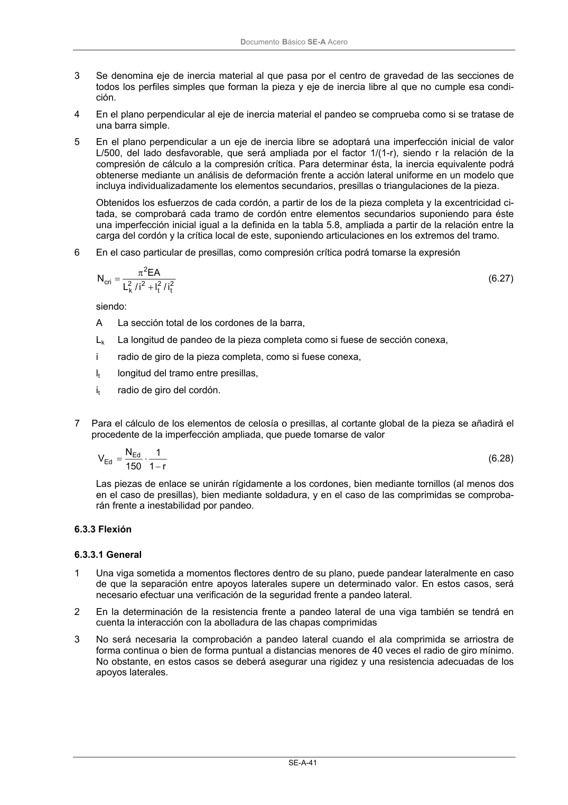
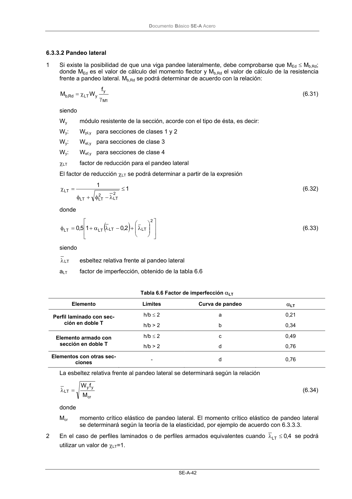

DB-SE-A · Fragmento de PDF p43 · versión 2007-10-23 · capa oficial
Formatos: JSON compacto · Markdown · PDF fuente
Ámbito del documento · texto del ámbito · documento y tablas
ID técnico a0079 · PDF pág. 43-44 · jerarquía no validada por persona · no es capítulo: sin_linea_de_encabezado · padre: raíz · literal original en el contenido: «6.3.3 Flexión 6.3.3.1 General»
6.3.3 Flexión 6.3.3.1 General 6.3.3.1 General 1 Una viga sometida a momentos flectores dentro de su plano, puede pandear lateralmente en caso de que la separación entre apoyos laterales supere un determinado valor. En estos casos, será necesario efectuar una verificación de la seguridad frente a pandeo lateral. 2 En la determinación de la resistencia frente a pandeo lateral de una viga también se tendrá en cuenta la interacción con la abolladura de las chapas comprimidas 3 No será necesaria la comprobación a pandeo lateral cuando el ala comprimida se arriostra de forma continua o bien de forma puntual a distancias menores de 40 veces el radio de giro mínimo. No obstante, en estos casos se deberá asegurar una rigidez y una resistencia adecuadas de los apoyos laterales. DocumentoBásico SE-A Acero SE-A-42


PDF fuente redistribuible: copia fiel enlazada en esta página (SHA256 verificado).